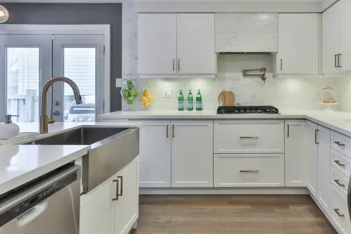

Kitchen and Bathroom Photo Gallery
Why choose Kitchen Remodel Seattle WA? You do not juggle multiple contractors. You work only with us. All of our staff are experienced professionals. All prices are made clear before any work is done and you will be fully aware of what we are doing each and every day and why. Lastly, the same work crew will show up every day and the work area will be fully cleaned before they leave each day.

Granite countertops come in a wide range of colors and need an experienced crew to install correctly.
We will help you find countertops that fit both functionality and appearance.
There is a wide range of fixture options and we will help you pick the right one for your kitchen.
We provide clear communication about every step of your new kitchen project. You will get realistic timelines and regular reviews of our work. There will be no surprises anywhere in the new kitchen remodel. We provide to you beautiful, elegant, fully functional new kitchen that you can be proud of and enjoy the rest of your life.
A kitchen remodel in seattle Wa is more than just an upgrade to your home. It is an opportunity to improve the quality of your day to day life. With our expert Kitchen Design Team, we will help you create a new kitchen that is functional, elegant and fits perfectly in your home. Your kitchen will be a place where you want to spend time. We provide custom cabinets and countertops and professional painting. We design and build kitchens that not only improve the value of your home, but improve the quality of your day to day life.
We are committed to delivering the highest quality kitchen remodel strictly matches your vision of what you want within your home.
Kitchen cabinets are an important part of every kitchen remodel.
A kitchen backsplash is a chance for you the home to show your style and personality.
Every homes kitchen serves as the center of activity in your home. Meals are prepared there. Family and friends hang out and eat, drink and have conversations in your kitchen. A kitchen remodel in Seattle allows you to design a kitchen that fits your living style. Our Design Team of kitchen experts help you bring your vision to life. A new kitchen can also increase the value of your home at the same time dramatically improving the quality of your life.
We know that the time you spend in your home is important and that the kitchen is a hub of activity on a regular basis. The kitchen is where you often gather with friends and family to cook, eat, drink and talk. It should be a relaxing, comfortable place that reflects you. When it comes to creating your new kitchen, let the experts at Kitchen Remodel Seattle WA bring you new kitchen to life.
Copyright © Kitchen Remodel Seattle